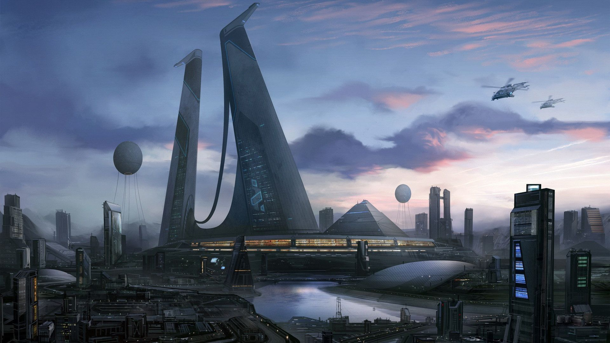

Learn from past mistake
Octuber 11, 2021
The future is completely open and we are writing it moment to moment.
I am Adarsh Shukla and this article is about what are my future goals. Offcourse future is can not be same as we predict or we want.
But Hardwork in right direction can change and shape our future.
I have done many mistakes in my past.But failures and mistakes teache us a lot.